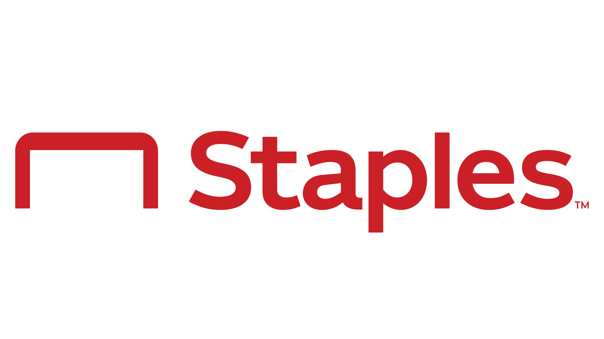
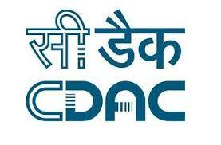

Soham Dutta
SkillSet
| SkillSet | |
|---|---|
| Software |
Languages: JAVA, VB Script, Java Script, C, Python, HTML, CSS, XML, JSON
Testing: Web App UI Automation, Services/API Auotomation, Mobile Testing, Test Management, Test Planning and Strategy Development:Microservices using Spring Boot, Spring Batch |
| Tools |
Tools: Selenium, Cucumber, Cypress, HP QTP, SQL Server, Oracle 10g, PostgreSQL, Teamcity,
Jenkins, GIT, Maven, JIRA, Postman, Apache Tomcat server
IDE: InteliJ, Eclipse, VS CODE, STS |
| Domain |
1. Retail / E-Commerce: Worked as Senior Quality Engineer in multiple applications for Mathworks
and Staples in their internal order management and finance applications.
2. Healthcare: Worked as Test Automation Engineer for testing windows based application in various projects leading health maintenance organization (HMO) organization – Kaiser. 3. Artificial Intelligence: During final semester of bachelors worked as an assistant developer intern in CDAC, Kolkata for development of a segmentation technique for Bengali online handwriting recognition software |
| Development Methodologies | AgileExperienced working in pure Agile environment using SAFe° or scrum, attending the daily scrum calls, Grooming and pointing session, managing bi-weekly releases, attending Retrospective and Sprint planning |
Highlights
- 10 years of experience in test automation and various spectrum of software quality assurance with multiple tools, technologies and frameworks in Retail, E-Commerce and Healthcare domain.
- Working as Sr Quality Engineer at Mathworks in Commerce \ ERP applications under BizApps department providing end to end quality assurance solutions in all stages of software development lifecycle.
- Experienced in designing and working on multiple test automation frameworks across multiple organizations for their internal and external web applications.
- Experienced in JAVA + Selenium test automation frameworks leveraging Junit or TestNG, BDD framework using Cucumber.
- Proficient in webservice testing by using various tools - POSTMAN, swagger, soap UI and Java/Junit based test automation frameworks.
- Have exposure in development of RestAPI based microservices using SPRING BOOT and SPRING BATCH framework in JAVA.
- Experienced working in pure Agile environment using SAFe° / Scrum / Kanban.
- Have exposure to CI/CD.
- Analyze business requirements and convert them into effective test scenarios which provides complete functional and end to end coverage of the business functionalities.
- Automated complex business functionalities which involve transactions in different stages of a purchase order life cycle via 1. Web-UI, 2. CSV files formats 3. API and 4. EDI File formats.
- Was lead of test automation team in migrating our application from on-premise to cloud ( Microsoft Azure). Performed various rounds of testing in different phases throughout the course of migration.
- Worked as an automation tester for an automating the regression test cases of a windows based healthcare application using HP QTP in a data driven Hybrid Framework.
- Eager to learn new tools and technologies. Participated in multiple Hackathons to develop new ideas and process improvement tools.
Work Experiences
| Company | Role | Duration | Responsibilities |
|---|---|---|---|
|
|
Senior Software Quality Engineer | 2.7 years [ July 2019 – Present] | Click here... |
| Staples Inc. | Software Development Engineer in Test | 3 years [ July 2016 – July 2019] | Click here... |
|
|
Software Development Engineer in Test | 6.9 years [ Sept 2012 – July 2019] | Click here... |
| Center of Development for Advanced Computing (CDAC), India. | Assistant Software Developer (Intern) | 5 months [ Jan 2012 – June 2012] | Click here... |